Note
Go to the end to download the full example code.
Denoising Rhythms (Spectral DSS).#
This example demonstrates how to use DSS to isolate oscillatory brain rhythms (e.g., Alpha, Beta) using spectral biases.
It covers bandpass-based extraction of a known frequency band, narrowband scanning to find oscillatory peaks automatically, and application to real MEG and EEG recordings.
- Authors: Sina Esmaeili (sina.esmaeili@umontreal.ca)
Hamza Abdelhedi (hamza.abdelhedi@umontreal.ca)
Imports#
import os
import matplotlib.pyplot as plt
import mne
import numpy as np
from mne.datasets import sample
from scipy import signal
from mne_denoise.dss import DSS, BandpassBias, LineNoiseBias
from mne_denoise.dss.variants import narrowband_dss, narrowband_scan
from mne_denoise.viz import (
plot_component_psd_comparison,
plot_component_summary,
plot_narrowband_score_scan,
)
Part 0: Synthetic Data Demo#
We simulate a brain-like mixture with an alpha rhythm at 10 Hz in one set of channels, a beta rhythm at 22 Hz in another set, plus pink noise and a 60 Hz line component.
print("\n--- Part 0: Synthetic Data Demo ---")
rng = np.random.default_rng(42)
sfreq = 500
n_seconds = 20
n_times = n_seconds * sfreq
n_channels = 16
times = np.arange(n_times) / sfreq
# 1. Generate Noise (Pink + Line)
noise = np.cumsum(rng.standard_normal((n_channels, n_times)), axis=1) # Brownian/Pink
noise = signal.detrend(noise, axis=1)
noise += 0.5 * np.sin(2 * np.pi * 60 * times) # Line noise
# 2. Generate Rhythms
# Alpha (10 Hz) - Amplitude Modulated
alpha_env = np.sin(2 * np.pi * 0.5 * times) ** 2
alpha = alpha_env * np.sin(2 * np.pi * 10 * times) * 2.0
# Beta (22 Hz) - Constant
beta = np.sin(2 * np.pi * 22 * times) * 1.5
# 3. Mix into data
data = noise.copy()
# Alpha in ch 0-2
data[0:3] += alpha * np.array([[1.0], [0.8], [0.5]])
# Beta in ch 4-6
data[4:7] += beta * np.array([[1.0], [0.8], [0.5]])
print(f"Simulated {n_channels} ch x {n_seconds} s. Peaks at 10Hz and 22Hz.")
# Create MNE Raw with channel names and montage for topomap plotting
ch_names = [
"Oz",
"O1",
"O2",
"Pz",
"P3",
"P4",
"P7",
"P8",
"Cz",
"C3",
"C4",
"Fz",
"F3",
"F4",
"F7",
"F8",
]
info_sim = mne.create_info(ch_names, sfreq, "eeg")
montage = mne.channels.make_standard_montage("standard_1020")
info_sim.set_montage(montage)
raw_sim = mne.io.RawArray(data, info_sim)
--- Part 0: Synthetic Data Demo ---
Simulated 16 ch x 20 s. Peaks at 10Hz and 22Hz.
Creating RawArray with float64 data, n_channels=16, n_times=10000
Range : 0 ... 9999 = 0.000 ... 19.998 secs
Ready.
Part 1: Narrowband Scan#
Suppose we don’t know the frequencies. We can scan for them. narrowband_scan runs DSS at many frequencies and returns the “score” (eigenvalue).
print("\nScanning frequencies (5-30 Hz)...")
# We scan 5-30 Hz with 1 Hz resolution
# For each freq, it tries to find a component that is 'narrowband' at that freq.
best_dss, freqs, eigenvalues = narrowband_scan(
data, sfreq=sfreq, freq_range=(5, 30), freq_step=0.5, bandwidth=2.0, n_components=1
)
# Visualize the Spectrum of "Oscillatoriness"
plot_narrowband_score_scan(freqs, eigenvalues, true_freqs=[10, 22], show=False)
plt.show()
print("Peaks clearly visible at 10 Hz and 22 Hz.")
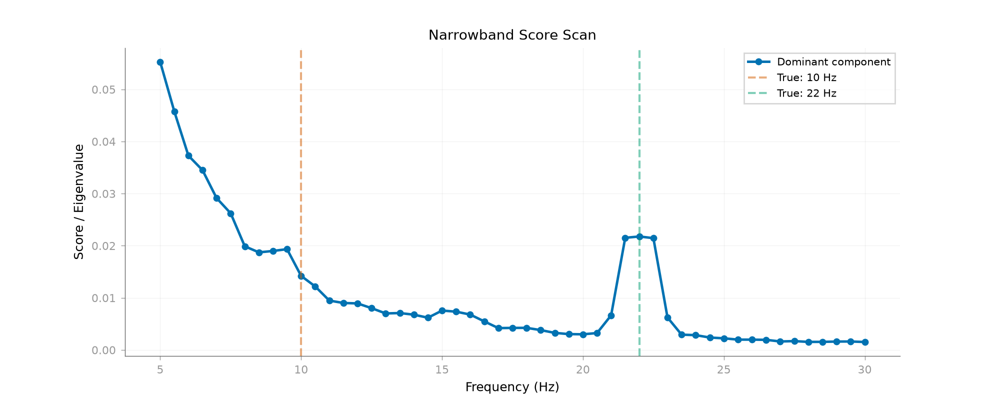
Scanning frequencies (5-30 Hz)...
Peaks clearly visible at 10 Hz and 22 Hz.
Part 1: Manual BandpassBias (10 Hz Alpha)#
BandpassBias applies a bandpass filter as the bias function. Here we manually create it to understand the API.
print("\n--- Part 1a: Manual BandpassBias ---")
# Create BandpassBias for 10 Hz ± 1 Hz
bias_alpha = BandpassBias(freq_band=(9.0, 11.0), sfreq=sfreq, order=4)
# Fit DSS manually
dss_manual = DSS(n_components=4, bias=bias_alpha)
dss_manual.fit(raw_sim)
print(f"DSS Eigenvalues: {dss_manual.eigenvalues_[:4]}")
# Visualize
sources_manual = dss_manual.transform(raw_sim)
plot_component_summary(
dss_manual,
data=raw_sim,
info=raw_sim.info,
picks=np.arange(len(raw_sim.ch_names)),
n_components=3,
show=False,
)
plt.gcf().suptitle("Manual BandpassBias (9-11 Hz)")
plt.show()
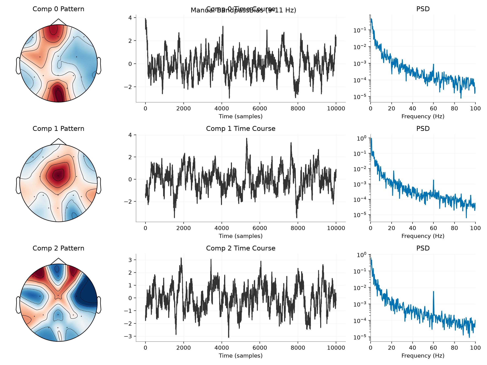
--- Part 1a: Manual BandpassBias ---
DSS Eigenvalues: [0.01420774 0.01187395 0.00853639 0.00608775]
Part 1b: Narrowband DSS Wrapper (Convenience)#
The narrowband_dss() wrapper simplifies the above by calculating the frequency band automatically from center freq + bandwidth.
print("\n--- Part 1b: narrowband_dss Wrapper ---")
dss_alpha = narrowband_dss(sfreq=sfreq, freq=10.0, bandwidth=2.0, n_components=4)
dss_alpha.fit(raw_sim)
print(f"Wrapper DSS Eigenvalues: {dss_alpha.eigenvalues_[:4]}")
print("(Should be similar to manual approach)")
# Visualize extracted component PSD
sources = dss_alpha.transform(raw_sim)
comp_raw = mne.io.RawArray(sources, mne.create_info(4, sfreq, "eeg"))
fig = comp_raw.compute_psd(fmax=40).plot(show=False)
fig.suptitle("DSS Component Spectrum (Target: 10 Hz)")
plt.show()
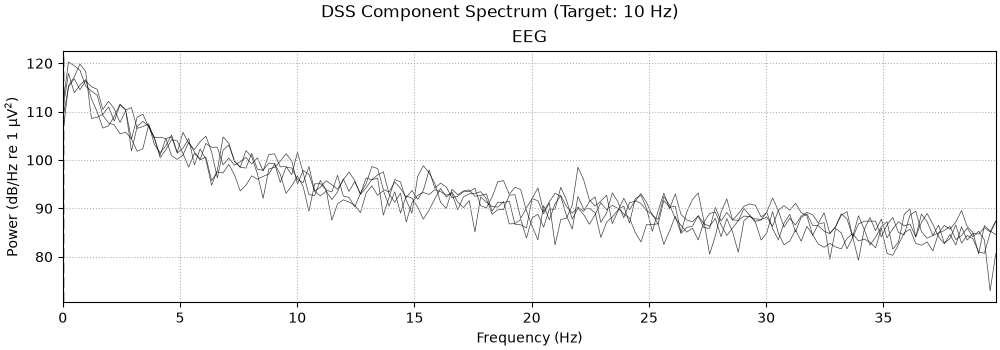
--- Part 1b: narrowband_dss Wrapper ---
Wrapper DSS Eigenvalues: [0.01420774 0.01187395 0.00853639 0.00608775]
(Should be similar to manual approach)
Creating RawArray with float64 data, n_channels=4, n_times=10000
Range : 0 ... 9999 = 0.000 ... 19.998 secs
Ready.
Effective window size : 4.096 (s)
Plotting power spectral density (dB=True).
/home/runner/work/mne-denoise/mne-denoise/examples/dss/plot_04_spectral_dss.py:166: RuntimeWarning: Channel locations not available. Disabling spatial colors.
fig = comp_raw.compute_psd(fmax=40).plot(show=False)
Compare Time Series
plt.figure(figsize=(10, 5))
plt.subplot(2, 1, 1)
plt.plot(times[:500], raw_sim.get_data()[0, :500])
plt.title("Original Sensor (Noisy)")
plt.subplot(2, 1, 2)
# Align polarity for visual comparison
src = sources[0, :500]
if np.corrcoef(src, alpha[:500])[0, 1] < 0:
src *= -1
plt.plot(times[:500], src, "r")
plt.plot(
times[:500],
alpha[:500] * (np.max(np.abs(src)) / np.max(np.abs(alpha))),
"k--",
alpha=0.5,
label="Truth",
)
plt.title("DSS Component 0 (Extracted Alpha)")
plt.legend()
plt.tight_layout()
plt.show()
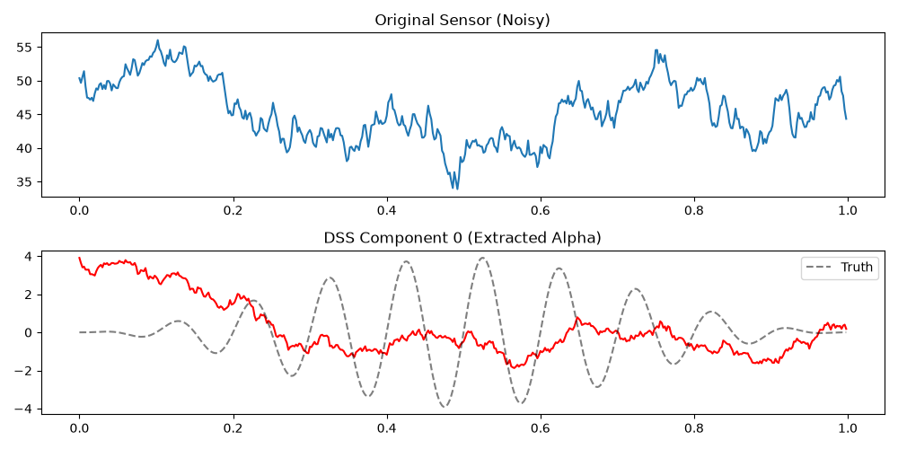
Part 3: Line Noise Removal (LineNoiseBias)#
LineNoiseBias isolates narrow frequency bands for removal (e.g., 60 Hz line noise). It supports both ‘iir’ (notch) and ‘fft’ (harmonic) methods.
print("\n--- Part 2: Line Noise (LineNoiseBias) ---")
# Simulate data with 60 Hz line noise + harmonics
line_freq = 60.0 # Hz
line_noise = (
0.5 * np.sin(2 * np.pi * line_freq * times) # 60 Hz
+ 0.3 * np.sin(2 * np.pi * 2 * line_freq * times) # 120 Hz
+ 0.1 * np.sin(2 * np.pi * 3 * line_freq * times) # 180 Hz
)
# Add to alpha signal
data_noisy = data + np.outer(np.ones(n_channels), line_noise)
raw_noisy = mne.io.RawArray(data_noisy, info_sim)
print(f"Added {line_freq} Hz line noise + harmonics")
--- Part 2: Line Noise (LineNoiseBias) ---
Creating RawArray with float64 data, n_channels=16, n_times=10000
Range : 0 ... 9999 = 0.000 ... 19.998 secs
Ready.
Added 60.0 Hz line noise + harmonics
Apply DSS with LineNoiseBias to Remove 60 Hz#
# We use method='iir' to replicate a traditional Notch filter approach
notch_bias_60 = LineNoiseBias(freq=60, sfreq=sfreq, method="iir", bandwidth=2)
dss_notch = DSS(n_components=3, bias=notch_bias_60)
dss_notch.fit(raw_noisy)
print(f"\nDSS Eigenvalues: {dss_notch.eigenvalues_[:3]}")
print("Component 0 should capture 60 Hz line noise")
sources_notch = dss_notch.transform(raw_noisy)
# Visualize
plot_component_summary(
dss_notch,
data=raw_noisy,
info=raw_noisy.info,
picks=np.arange(len(raw_noisy.ch_names)),
n_components=3,
show=False,
)
plt.show()
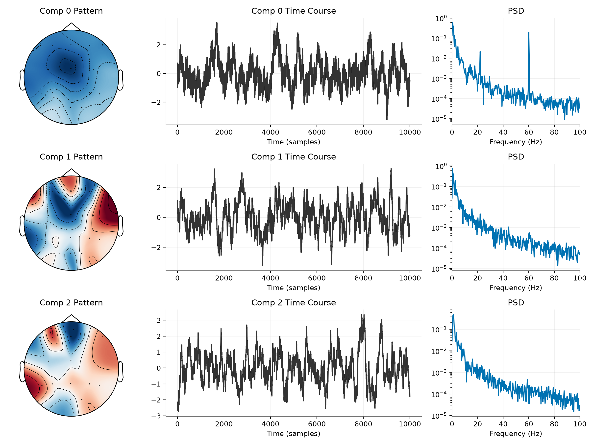
DSS Eigenvalues: [0.06828558 0.00038516 0.0002469 ]
Component 0 should capture 60 Hz line noise
PSD comparison
plot_component_psd_comparison(
raw_noisy,
sources_notch,
component_indices=[0],
sfreq=sfreq,
peak_freq=60,
fmax=200,
show=False,
)
plt.gcf().axes[0].set_title("Line Noise: Original PSD (60 Hz + harmonics)")
plt.gcf().axes[1].set_title("Line Noise: DSS Components PSD")
# Mark harmonics
for ax in plt.gcf().axes:
for h in [2, 3]:
ax.axvline(line_freq * h, color="orange", linestyle="--", alpha=0.5)
plt.show()
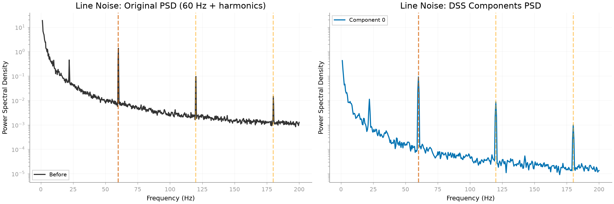
Effective window size : 4.096 (s)
Remove Line Noise and Recover Clean Signal#
Project out the first component (60 Hz noise)
# Get denoised data by removing component 0
sources = dss_notch.transform(raw_noisy)
sources[0] = 0 # Zero out the 60 Hz component
# Reconstruct without line noise
data_cleaned = dss_notch.inverse_transform(sources)
# Compare PSDs
from scipy.signal import welch
freqs_orig, psd_orig = welch(data_noisy[0], fs=sfreq, nperseg=1024)
freqs_clean, psd_clean = welch(data_cleaned[0], fs=sfreq, nperseg=1024)
plt.figure(figsize=(10, 5))
plt.semilogy(freqs_orig, psd_orig, "r", alpha=0.7, label="With 60 Hz noise")
plt.semilogy(freqs_clean, psd_clean, "g", alpha=0.7, label="After removal")
plt.axvline(60, color="k", linestyle="--", alpha=0.5, label="60 Hz")
plt.axvline(120, color="gray", linestyle="--", alpha=0.5)
plt.xlabel("Frequency (Hz)")
plt.ylabel("Power")
plt.title("Line Noise Removal with LineNoiseBias")
plt.legend()
plt.xlim(0, 200)
plt.grid(True, alpha=0.3)
plt.show()
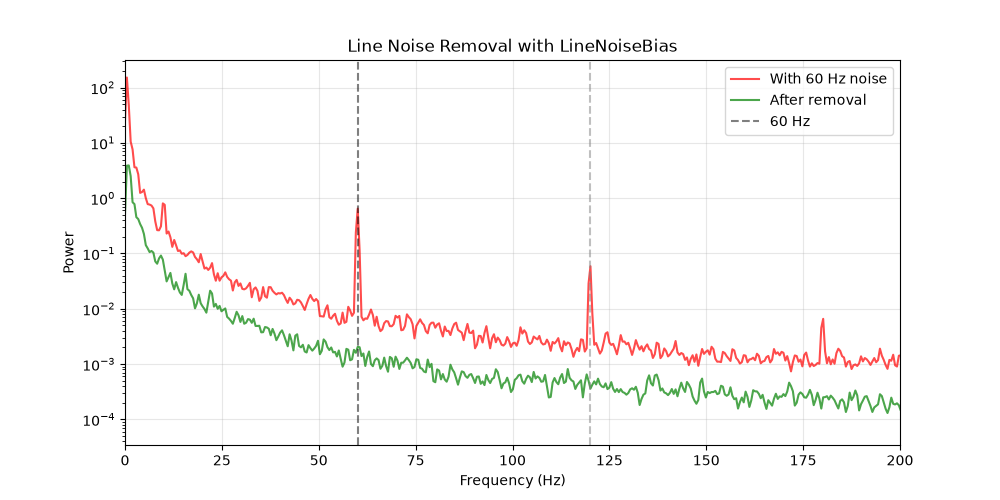
Part 4: Real Data (MEG Alpha)#
We apply this to real MEG data to find spontaneous Alpha rhythms.
print("\n--- Part 3: MNE Sample Data (Alpha) ---")
home = os.path.expanduser("~")
mne_data_path = os.path.join(home, "mne_data")
data_path = sample.data_path()
raw_fname = data_path / "MEG" / "sample" / "sample_audvis_raw.fif"
raw = mne.io.read_raw_fif(raw_fname, preload=True, verbose=False)
raw.pick_types(meg="grad", eeg=False, eog=False, stim=False, exclude="bads")
raw.crop(0, 60) # 60 seconds
raw.resample(100) # Downsample for speed
# Scan for natural rhythms in this dataset
print("Scanning MEG data 5-20 Hz...")
_, freqs_meg, eigs_meg = narrowband_scan(
raw.get_data(),
sfreq=raw.info["sfreq"],
freq_range=(5, 20),
freq_step=1.0,
n_components=1,
)
plot_narrowband_score_scan(
freqs_meg, eigs_meg, peak_freq=freqs_meg[np.argmax(eigs_meg)], show=False
)
plt.gcf().axes[0].set_title("MEG: Narrowband Scan for Alpha")
plt.show()
# Typically ~10-11 Hz is dominant. Let's extract it.
peak_freq = freqs_meg[np.argmax(eigs_meg)]
print(f"Peak detected at {peak_freq:.1f} Hz")
dss_meg = narrowband_dss(
sfreq=raw.info["sfreq"], freq=peak_freq, bandwidth=3.0, n_components=5
)
dss_meg.fit(raw)
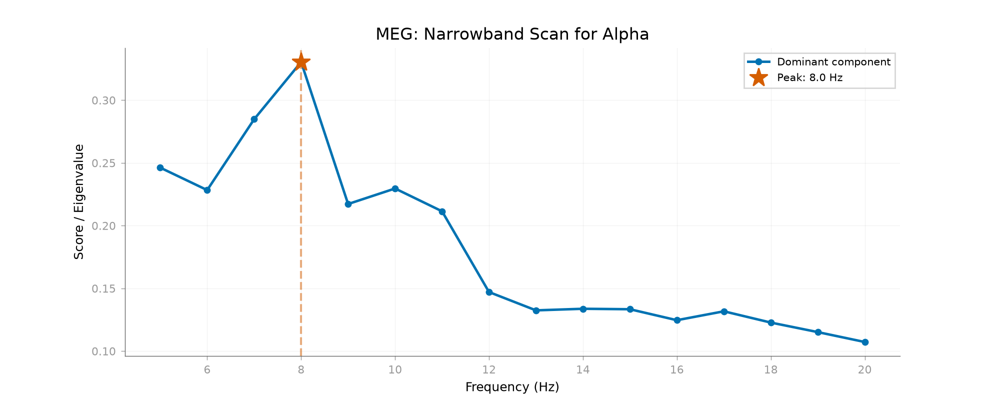
--- Part 3: MNE Sample Data (Alpha) ---
NOTE: pick_types() is a legacy function. New code should use inst.pick(...).
Scanning MEG data 5-20 Hz...
Peak detected at 8.0 Hz
plot_component_summary(
dss_meg,
data=raw,
info=raw.info,
picks=np.arange(len(raw.ch_names)),
n_components=3,
show=False,
)
plt.show()
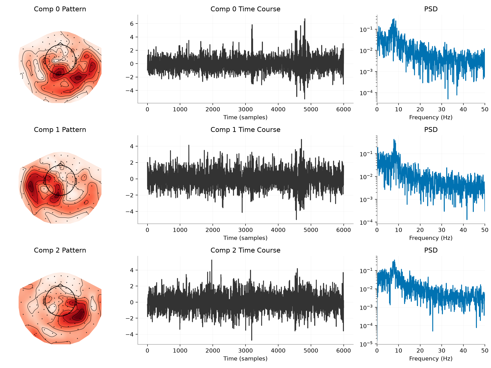
Additional visualizations for MEG
print("Creating additional MEG visualizations...")
# The high-level visualization helpers can also produce the same comparisons,
# but here we keep custom plots so the intermediate quantities remain explicit.
# Time series comparison: Raw sensor vs DSS component
sources_meg = dss_meg.transform(raw)
fig, axes = plt.subplots(2, 1, figsize=(12, 6))
t = raw.times[:1000] # First 10 seconds
axes[0].plot(t, raw.get_data()[0, :1000])
axes[0].set_title("MEG: Original Sensor (Gradiometer 0)")
axes[0].set_ylabel("Amplitude")
axes[0].grid(True, alpha=0.3)
axes[1].plot(t, sources_meg[0, :1000], color="purple")
axes[1].set_title(f"MEG: Extracted Alpha Component ({peak_freq:.1f} Hz)")
axes[1].set_xlabel("Time (s)")
axes[1].set_ylabel("Amplitude")
axes[1].grid(True, alpha=0.3)
plt.tight_layout()
plt.show()
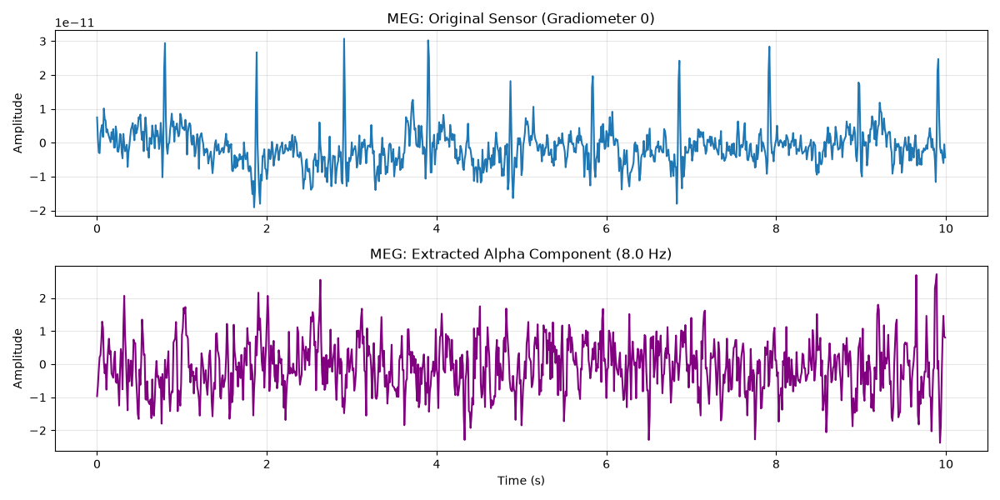
Creating additional MEG visualizations...
PSD Comparison: Before vs After
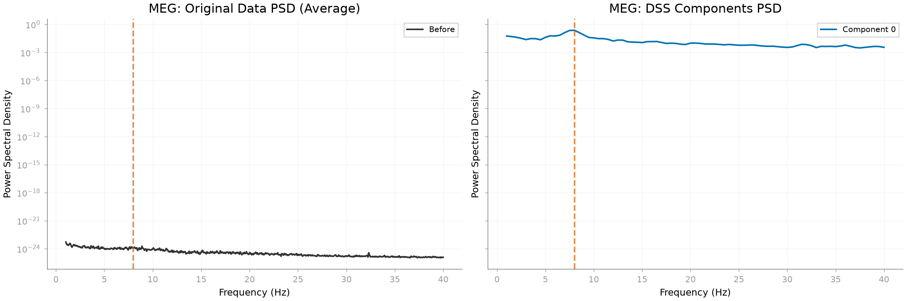
Effective window size : 20.480 (s)
Part 4: Real Data (EEG Alpha - Resting State)#
For EEG, we use the EEG Motor Movement/Imagery dataset which includes resting-state recordings with eyes-open and eyes-closed conditions. Eyes-closed resting state typically shows strong alpha rhythms (8-12 Hz).
print("\n--- Part 4: EEG Resting-State Alpha (EEGBCI Dataset) ---")
from mne.datasets import eegbci
from mne.io import read_raw_edf
# Load resting-state data (eyes closed = run 1)
# Subject 1, Run 1 (eyes closed 1 minute)
print("Loading EEGBCI resting-state data (eyes closed)...")
try:
data_path = eegbci.load_data(subjects=[1], runs=[1], update_path=True)[0]
except Exception as e:
import sys
print(f"Skipping EEGBCI example due to network error: {e}")
sys.exit(0)
raw_eeg = read_raw_edf(
data_path,
preload=True,
verbose=False,
)
# Clean up annotations
raw_eeg.annotations.onset[:] = 0 # Reset annotations
eegbci.standardize(raw_eeg) # Apply standard channel names
montage = mne.channels.make_standard_montage("standard_1005")
raw_eeg.set_montage(montage, on_missing="ignore")
# Pick EEG channels, exclude non-standard ones
raw_eeg.pick_types(meg=False, eeg=True, stim=False, eog=False, exclude="bads")
raw_eeg.crop(0, 30) # Use first 30 seconds
raw_eeg.filter(1, 40, fir_design="firwin") # Bandpass for cleaner alpha
raw_eeg.resample(100) # Downsample for speed
# Re-reference to average
raw_eeg.set_eeg_reference("average", projection=True)
raw_eeg.apply_proj()
print(
f"EEG Data: {len(raw_eeg.ch_names)} channels, "
f"{raw_eeg.times[-1]:.1f}s (eyes closed)"
)
# Scan for rhythms
print("Scanning EEG for alpha rhythm...")
_, freqs_eeg, eigs_eeg = narrowband_scan(
raw_eeg.get_data(),
sfreq=raw_eeg.info["sfreq"],
freq_range=(5, 20),
freq_step=0.5,
n_components=1,
)
peak_freq_eeg = freqs_eeg[np.argmax(eigs_eeg)]
plot_narrowband_score_scan(freqs_eeg, eigs_eeg, peak_freq=peak_freq_eeg, show=False)
plt.gcf().axes[0].set_title("EEG: Narrowband Scan (Eyes Closed Resting State)")
plt.show()
print(f"EEG Peak detected at {peak_freq_eeg:.1f} Hz (alpha band)")
# Extract alpha component
dss_eeg = narrowband_dss(
sfreq=raw_eeg.info["sfreq"], freq=peak_freq_eeg, bandwidth=3.0, n_components=5
)
dss_eeg.fit(raw_eeg)
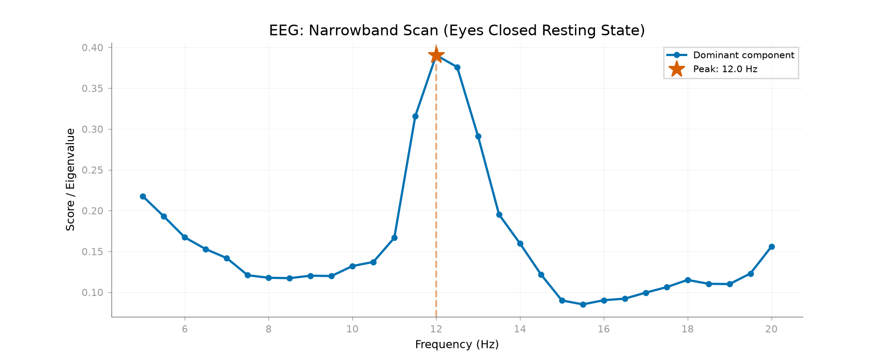
--- Part 4: EEG Resting-State Alpha (EEGBCI Dataset) ---
Loading EEGBCI resting-state data (eyes closed)...
NOTE: pick_types() is a legacy function. New code should use inst.pick(...).
Filtering raw data in 1 contiguous segment
Setting up band-pass filter from 1 - 40 Hz
FIR filter parameters
---------------------
Designing a one-pass, zero-phase, non-causal bandpass filter:
- Windowed time-domain design (firwin) method
- Hamming window with 0.0194 passband ripple and 53 dB stopband attenuation
- Lower passband edge: 1.00
- Lower transition bandwidth: 1.00 Hz (-6 dB cutoff frequency: 0.50 Hz)
- Upper passband edge: 40.00 Hz
- Upper transition bandwidth: 10.00 Hz (-6 dB cutoff frequency: 45.00 Hz)
- Filter length: 529 samples (3.306 s)
EEG channel type selected for re-referencing
Adding average EEG reference projection.
1 projection items deactivated
Average reference projection was added, but has not been applied yet. Use the apply_proj method to apply it.
Created an SSP operator (subspace dimension = 1)
1 projection items activated
SSP projectors applied...
EEG Data: 64 channels, 30.0s (eyes closed)
Scanning EEG for alpha rhythm...
EEG Peak detected at 12.0 Hz (alpha band)
plot_component_summary(
dss_eeg,
data=raw_eeg,
info=raw_eeg.info,
picks=np.arange(len(raw_eeg.ch_names)),
n_components=3,
show=False,
)
plt.show()
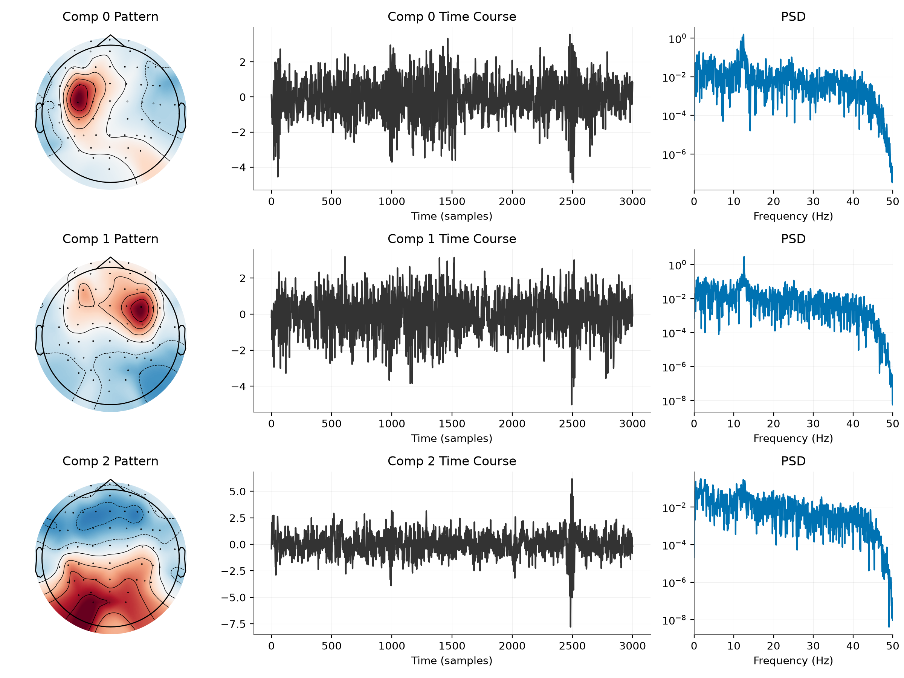
Additional visualizations for EEG
print("Creating additional EEG visualizations...")
# Note: Similar to MEG, you can use plot_psd_comparison() and
# plot_channel_time_course_comparison() from mne_denoise.viz
# Time series comparison: Raw sensor vs DSS component
sources_eeg = dss_eeg.transform(raw_eeg)
fig, axes = plt.subplots(2, 1, figsize=(12, 6))
t_eeg = raw_eeg.times[:1000] # First 10 seconds
axes[0].plot(t_eeg, raw_eeg.get_data()[0, :1000])
axes[0].set_title("EEG: Original Sensor (Channel 0)")
axes[0].set_ylabel("Amplitude (µV)")
axes[0].grid(True, alpha=0.3)
axes[1].plot(t_eeg, sources_eeg[0, :1000], color="orange")
axes[1].set_title(f"EEG: Extracted Alpha Component ({peak_freq_eeg:.1f} Hz)")
axes[1].set_xlabel("Time (s)")
axes[1].set_ylabel("Amplitude")
axes[1].grid(True, alpha=0.3)
plt.tight_layout()
plt.show()
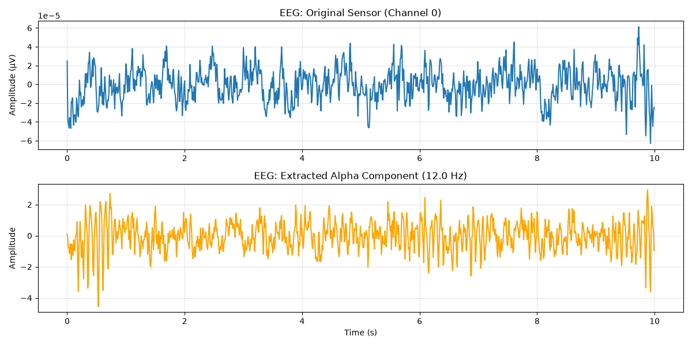
Creating additional EEG visualizations...
PSD Comparison: Before vs After
plot_component_psd_comparison(
raw_eeg,
sources_eeg,
component_indices=[0],
sfreq=raw_eeg.info["sfreq"],
peak_freq=peak_freq_eeg,
show=False,
)
plt.gcf().axes[0].set_title("EEG: Original Data PSD (Average)")
plt.gcf().axes[1].set_title("EEG: DSS Components PSD")
plt.show()
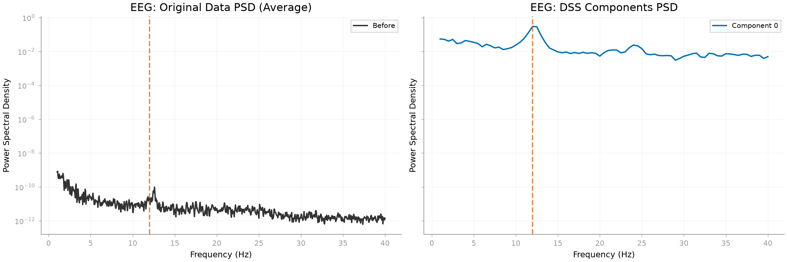
Effective window size : 20.480 (s)
Total running time of the script: (0 minutes 8.826 seconds)